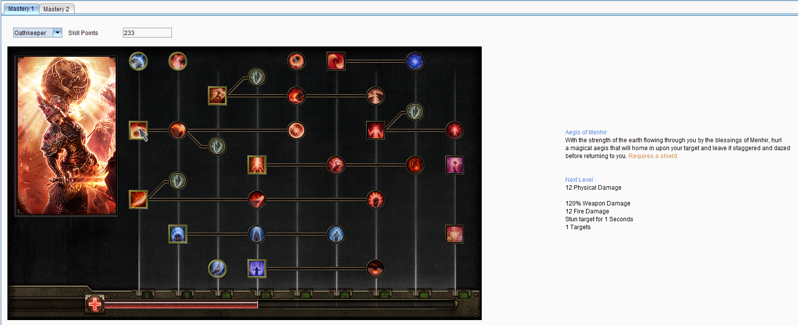

Analyze mastery
On this screen the masteries of a mod can be analyzed without having to create a character.
The number of skill points available is the number of skill points the char would have received
at the maximum level, plus the 11 skill points the char can receive from quests in the Grim Dawn
campaign.
A mastery can be selected from the drop-down list at the top.

Skills can be increased by clicking on them. By right-clicking they are decreased again.
When hovering over a skill, its description is shown on the right side.
When selecting a different mastery after spending points in the currently selected mastery,
those points will be refunded.